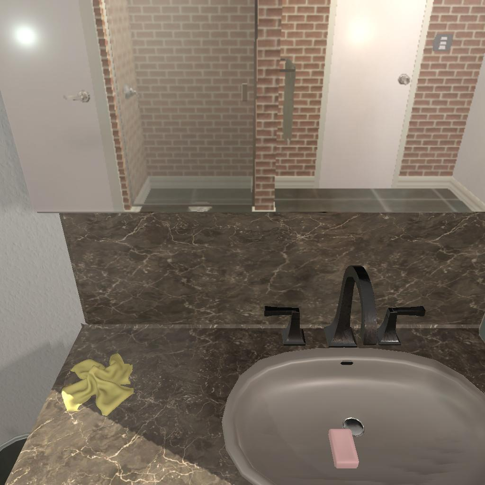

---------------------------------------------------------task: 27---------------------------------------------------------
--------------------------------------------------------------------------------------------------------------------------------------------------------------------
--------------------------------------------------------------------------------------------------------------------------------------------------------------------
Step:--------------------------------------------------------------------------2-------------------------------------------------------------------------------
----------------------------------------
VLM Prompt:
**Task**
Please perform as an embodied AI agent. Our final objective is to find two soapbottle and put them in garbagecan. Below is the plan for completing the task, the current observation, alongside historical data and admissible actions for the next step. Please determine the best action for the next step!
**Plan**
Below is a detailed step-by-step plan to complete the task.
1. Find a soap bottle.
2. Pick up the soap bottle.
3. Find a garbage can.
4. Place the picked-up soap bottle in the garbage can.
5. Find another soap bottle.
6. Pick up the soap bottle.
7. Return to the previously located garbage can.
8. Place the picked-up soap bottle in the garbage can with the other soap bottle.
**Current Observation**
Displayed is an image capturing the current position of the agent.
Objects in The Image: ['sink', 'faucet', 'soap', 'cleaning cloth', 'mirror', 'shower stall', 'shower door', 'tile wall']
**History Information**
Displayed are the previous observations with their corresponding actions.
State 0:
No history.
State 1:
1. Step Index in the Plan: 1
2. Objects: Bottle, Cabinet, Window, Trash Bin
3. Action: go to countertop 1
State 2:
1. Step Index in the Plan: 1
2. Objects: Sink, Soap Bar
3. Action: go to sinkbasin 1
**Admissible Actions**
(1): go to sink 1
(2): go to garbagecan 1
(3): go to drawer 1
(4): go to drawer 2
(5): go to sink 2
(6): go to sinkbasin 2
(7): go to toilet 1
(8): go to handtowelholder 1
(9): take faucet 1 from sinkbasin 1
(10): take cloth 1 from sinkbasin 1
(11): take soapbar 1 from sinkbasin 1
(12): take soapbottle 1 from sinkbasin 1
**Analysis Guideline**
1. Analyze the history and current observation, and then determine our current step in the plan and our current place.
2. List all visible objects related to the task in the current observation, without summarizing any as "various items."
3. Analyze the objects in the current observation based on the history and the requirements for the current step, and then determine if we can complete the step with the current observation.
4. Analyze and decide on the most appropriate action to take.
5. Summarize the analysis using the following format: "Analysis: [The summarization of the analysis], The Most Appropriate Action: (i which is the integer.): [Selected action]"
**Notes**
1. We must complete each step of the plan in order and cannot skip steps when the previous ones are not finished.
2. For "Go to" actions listed as "go to xxx [n]", interpret this as there are n distinct actions available: "go to xxx 1", "go to xxx 2", ..., "go to xxx n". Select one specific action from these options instead of using "go to xxx [n]".
3. If receptacles such as drawers, cabinets, and so forth are closed in the current observation, we may try to open them.
4. Pay attention to synonyms and ensure clarity in the terms used.
5. We must determine and provide the single action which must be in the **Admissible Actions**.
6. If there is no history available, we are at the first step and the current place is "Unknown".
**Answer**
Please select the most suitable action by following the **Analysis Guideline**, keeping the above **Notes** in mind.
----------------------------------------
----------------------------------------
VLM Response:
Analysis: The current step in the plan is to pick up a soap bottle, as we have already located the sink in the previous state. In the current observation, there is a soap bar on the sink basin, but no soap bottle visible. Since the plan specifically mentions finding and disposing of soap bottles, and the soap bar is not our target object for this task, we should not pick up the soap bar. Reviewing the admissible actions, there is an action to take a soap bottle from the sink basin, but since no soap bottle is visible in the current observation, this implies that the soap bottle may not be in direct view and could potentially be in a different area of the sink that is not visible from the current angle or it might be a mistake in the admissible actions list. However, since it's the only action related to our current step in the plan, we should try to pick up the soap bottle, as it might be just out of view.
The Most Appropriate Action: (12): take soapbottle 1 from sinkbasin 1
----------------------------------------
----------------------------------------
>>> Refine VLM Response and Get Pure Action: take soapbottle 1 from sinkbasin 1
----------------------------------------
-----------------------------------------------------------------
Running time: 29.74112367630005 seconds
Total Money: 0
-----------------------------------------------------------------
-----------------------------------------------------------------
Summarization Prompt:
**Context**
Analysis: Since there is no history information, we are at the first step in the plan, which is to find a statue. The current place is unknown. In the current observation, we see a floorlamp next to an armchair with a small table that has a small object on it, which could potentially be the statue we are looking for. Since the plan requires us to find a statue first and it appears there might be one on the table next to the armchair, we should investigate this object to determine if it is the statue we need.
The Most Appropriate Action: (1): go to armchair 1
**Summary**
1. Step Index in the Plan: 1
2. Objects: Floorlamp, Armchair, Small Table, Small Object (potential statue)
3. Action: go to armchair 1
**Context**
Analysis: The current step in the plan is to pick up a soap bottle, as we have already located the sink in the previous state. In the current observation, there is a soap bar on the sink basin, but no soap bottle visible. Since the plan specifically mentions finding and disposing of soap bottles, and the soap bar is not our target object for this task, we should not pick up the soap bar. Reviewing the admissible actions, there is an action to take a soap bottle from the sink basin, but since no soap bottle is visible in the current observation, this implies that the soap bottle may not be in direct view and could potentially be in a different area of the sink that is not visible from the current angle or it might be a mistake in the admissible actions list. However, since it's the only action related to our current step in the plan, we should try to pick up the soap bottle, as it might be just out of view.
The Most Appropriate Action: (12): take soapbottle 1 from sinkbasin 1
Please summarize the context by following above examples when providing the summary, and ensure that only the summary is included, without any extra explanation.
**Summary**
-----------------------------------------------------------------
-----------------------------------------------------------------
Summarization Response:
1. Step Index in the Plan: 2
2. Objects: Sink, Soap Bar
3. Action: take soapbottle 1 from sinkbasin 1
-----------------------------------------------------------------
-----------------------------------------------------------------
Text Observation:You pick up the soapbottle 1 from the sinkbasin 1.
-----------------------------------------------------------------
UNSUCCEED